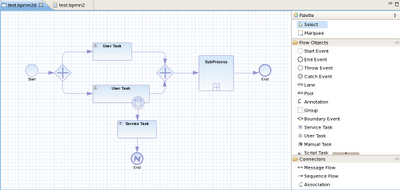

New BPMN 2.0 Eclipse editor
We would like to show you our new and improved BPMN 2.0 Eclipse editor, which is currently being developed for jBPM 5.1 and will support a much larger part of the BPMN 2.0 specification (hopefully even including basic choreography and conversation).
For this, we’ve had a lot of help from the guys at Codehoop. They’ve been working on it for the last few months, and we believe it’s currently at a stage where people can start to play it with and give us feedback.

(click on image to enlarge)Features:
- It supports almost all BPMN 2.0 process constructs and attributes (including lanes and pools, annotations and all the BPMN2 node types).
- Support for the few custom attributes that jBPM5 introduces.
- Allows you to configure which elements and attributes you want use when modeling processes (so we can limit the constructs for example to the subset currently supported by jBPM5, which is a profile we will support by default, or even more if you like).
Since it is still work in progress, there are still a few limitations or missing elements, but we should be able to clean it all up pretty soon, and include it as part of jBPM 5.1. But if you’re looking for an open-source BPMN2 editor and might be interested in participating, let us know !
You can find the codebase here. We will be providing an easy-to-use update site for installation once we reach the final milestone, but if you already want to give it a go and build it from source:
- Fetch the source and import the projects into Eclipse.
- The project is reusing the Eclipse BPMN2 meta-model project for loading / saving BPMN 2.0 XML, so you will need to download and import the projects from the Eclipse BPMN2 repository (git://git.eclipse.org/gitroot/bpmn2) as well.
- If you then run as Eclipse application, a new Eclipse environment should come up.
- Create a new BPMN2 diagram by selecting File -> New -> Other and then select BPMN2 Diagram Wizard (under BPMN2 category).
There is also a Wiki page that contains some screenshots useful information.
Codehoop is a small agency building Eclipse toolkits and Java+Scala enterprise middleware. The team has been excited to work with Fortune 500 companies as well as small startups. The result is a great variety of expertise on Eclipse technologies, ranging from database management to code editors, visual modelling and vector-based animation studio.
Let us know what you think !

{kind=link}
{kind=link}